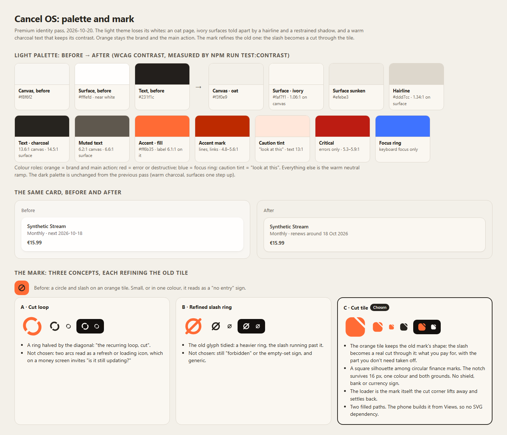
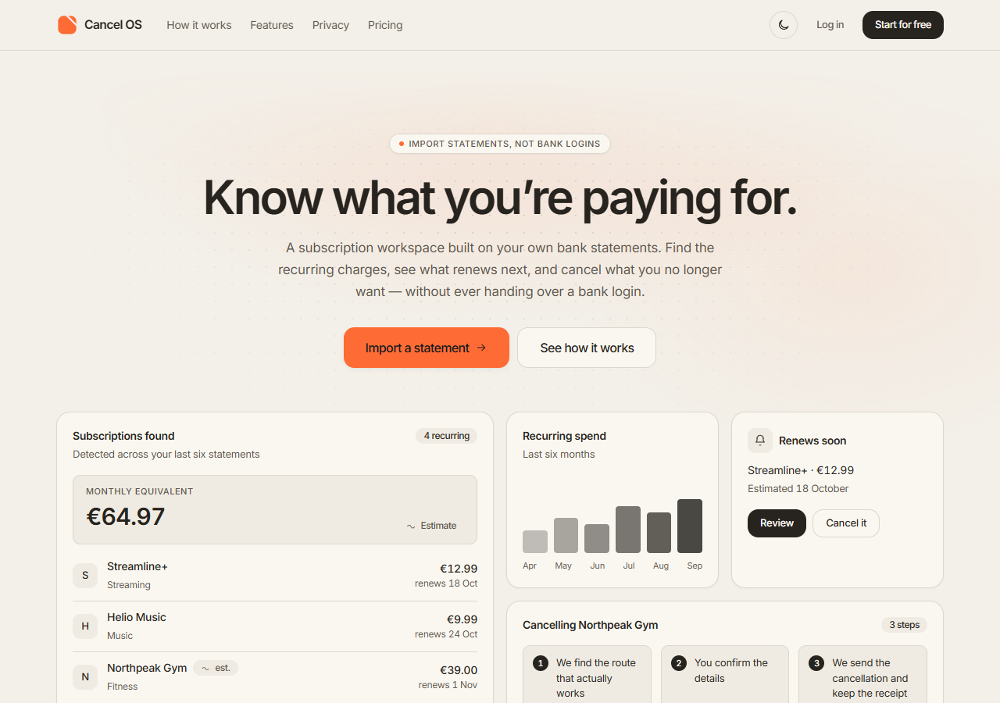
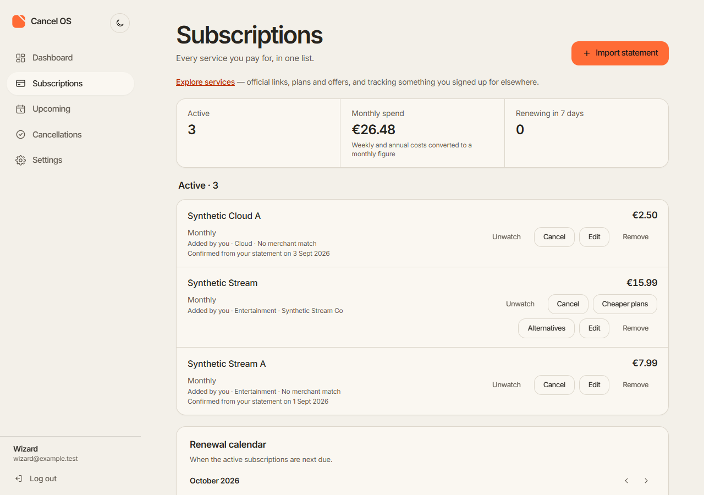
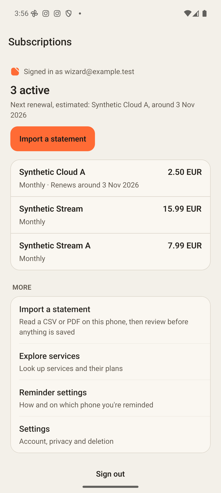
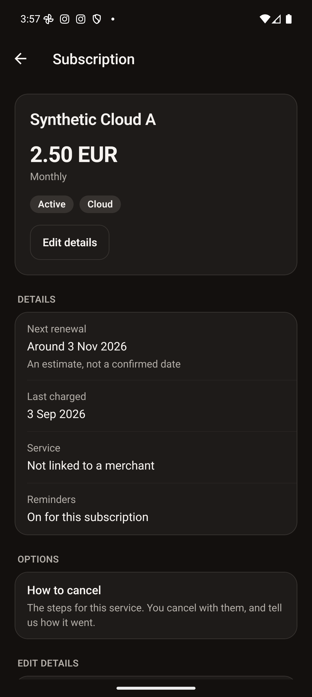
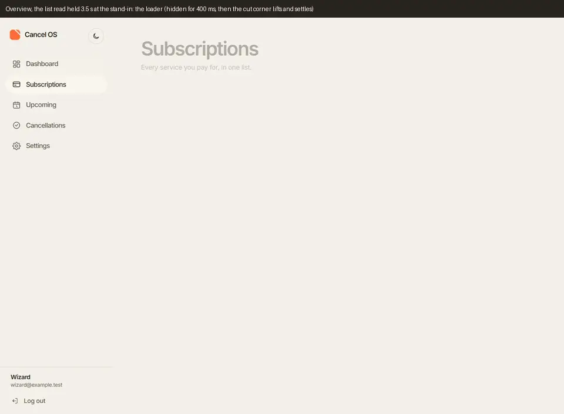
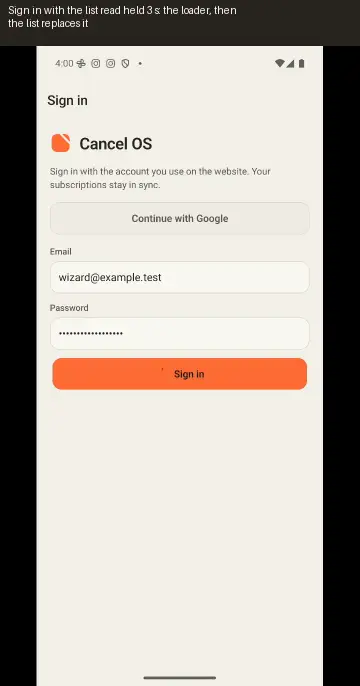
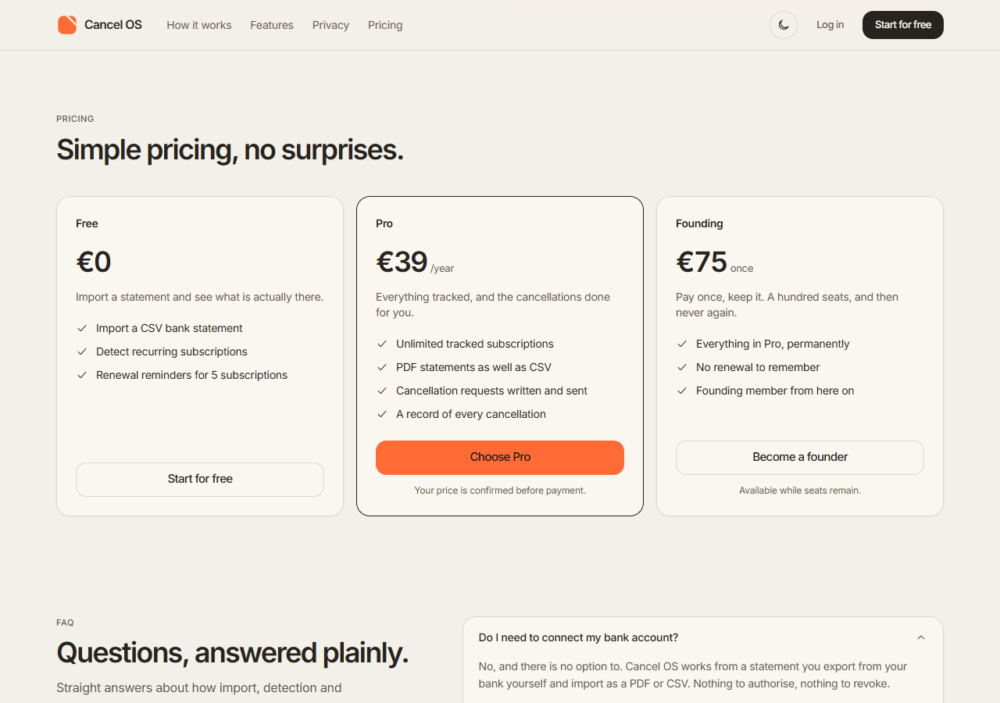

Cancel OS
The oat and ivory palette, the cut-tile logo, the brand loader and calmer motion. Every screen uses synthetic
test data (account wizard@example.test, services named "Synthetic …") on a local stand-in server, in
headless Chrome or the Android emulator. No real person's data appears.
This is a public preview. Anyone with the link can open it. It asks search engines not to index it, but that is a request, not access control.

The light theme drops pure white: an oat page, ivory surfaces, a hairline edge and warm charcoal text (13.6:1). Orange stays the brand and the main action. Of three logo concepts, the cut tile was chosen. The before-and-after card on this sheet is an illustration with example data, not a capture.

The first view, with no entrance animation. The cards show the page's built-in example figures (Streamline+, Helio Music), not account data.

Each row's figure is the stored amount. Where it came from, its category and merchant are one quiet line.

A count, never a money total. One primary action.

The renewal is worded as an estimate.
Different data"Renews around 3 Nov 2026" on Synthetic Cloud A comes from an earlier test save on the synthetic account. Captures of the previous design show no renewal date for it, so any before-and-after comparison of these two screens compares different data as well as a different design.

The loader while the stand-in holds the list read for 3.5 s: hidden for 400 ms, then the logo's cut corner lifts and settles. Then a FAQ panel growing open, and the row editor's reveal.

Sign in, the loader while the list read is held 3 s, the list, a row's pressed ground, the subscription sliding in, and a save with "Saved to your account".

Outdated in the recordingThe website recording was made at 936a9fe,
so its FAQ segment still shows a "Most popular" badge on the Pro tier. There was no evidence for that claim,
so the badge was removed in eefb0e8, and nothing replaced it.
This screenshot is the pricing section without it. Prices, features and buttons are unchanged.